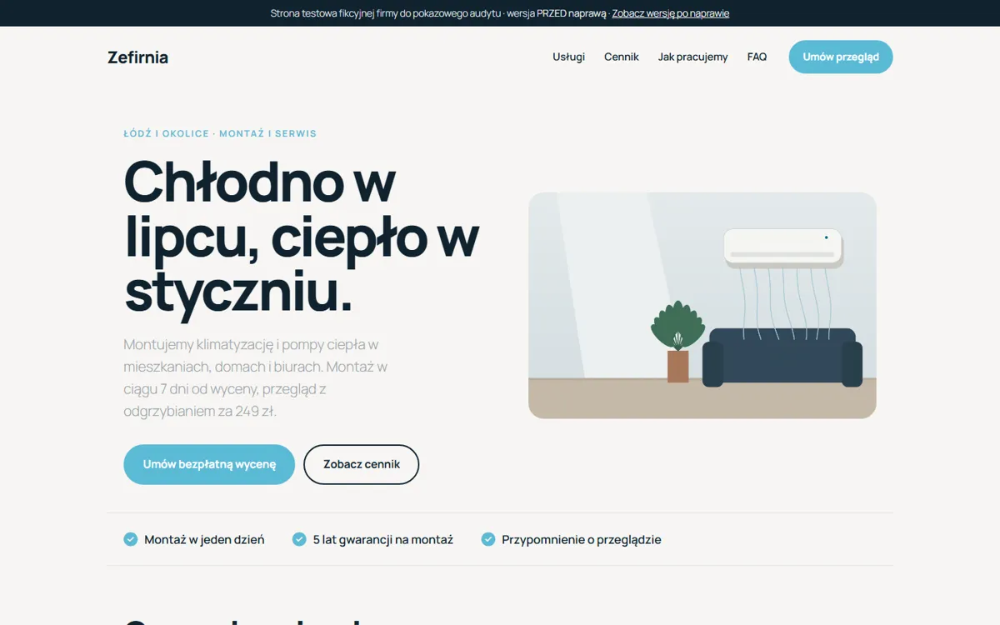

Projekt koncepcyjny · strona testowa przygotowana do pokazu
Ta sama strona. 8,3 MB przed naprawą, 77 kB po.
Pokazowy audyt i naprawa strony WordPress: szybkość, dostępność według WCAG 2.2 i SEO techniczne. Obie wersje są online, więc każdy wynik możesz sprawdzić samodzielnie.
Waga strony
8,3 MB→77 kB
Pobierane pliki
26→8
Błędy WCAG (axe-core)
19→0
Widoczna dla Google
nie→tak
Pomiar 10 listopada 2026, wersja na telefon. Wynik w punktach Google Lighthouse sprawdzisz samodzielnie w PageSpeed Insights (linki niżej).
Zobacz obie wersje

Przed naprawąGrafika 6,7 MB, 4 rodziny czcionek, jQuery i slider, strona ukryta przed Google.

Po naprawieTen sam wygląd: obrazy WebP, jedna czcionka, zero plików JavaScript, pełne SEO.
Liczby
| Wskaźnik | Przed | Po |
|---|---|---|
| Waga strony | 8,3 MB | 77 kB |
| Pobierane pliki | 26 | 8 |
| Błędy WCAG 2.2 AA wykryte automatycznie (axe-core) | 19 | 0 |
| Widoczność w Google | zablokowana | włączona |
| Problemy znalezione w audycie (szczegóły w raporcie PDF) | 18 | 0 |
Mierzyłam statyczne kopie stron wygenerowanych przez WordPress, na serwerze z kompresją jak w GitHub Pages; czas odpowiedzi serwera WordPressa nie wchodzi do wyniku. Strona testowa ma płaskie grafiki, więc waga po naprawie jest wyjątkowo mała: strona ze zdjęciami po takiej samej optymalizacji waży zwykle kilka razy więcej.
Raport i pomiary
- Raport z audytu (PDF, 4 strony) 18 problemów, priorytety, co naprawiłam
- PageSpeed Insights: wersja przed test Google na żywo
- PageSpeed Insights: wersja po test Google na żywo
Jak powstał ten przykład
- Zbudowałam stronę fikcyjnej firmy Zefirnia na WordPressie 7.1 i sama dodałam do niej błędy, o które zleceniodawcy najczęściej pytają w ogłoszeniach. To strona testowa przygotowana do pokazu, a nie realizacja dla klienta.
- Sprawdziłam ją narzędziami axe-core i Lighthouse oraz ręcznie: etykiety, język, nagłówki.
- Naprawiłam ją tak, jak zrobię to na stronie klienta: w treści i w jednej małej wtyczce, bez zmiany wyglądu.
- Zmierzyłam ponownie. Wynik w punktach Lighthouse możesz sprawdzić samodzielnie w PageSpeed Insights.